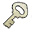

Menu
Tile Mode |
Mobile Mode |
Simple Mode |
Quicklinks
- Audit - Account value estimate
- Catalog - Keychain and item watchlist
- Cleanup - Unused inventory items
- Possessions - Account search
Contact

Account
 WvW
WvW

Display
Zone